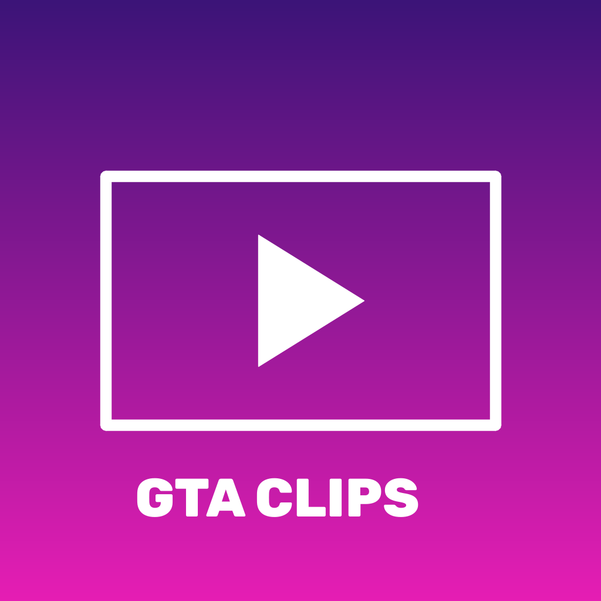

GTA Clips is a personal desktop tool that turns highlight moments from GTA 6 livestreams into short vertical videos and uploads them as drafts to the owner's own TikTok account. The account owner reviews every clip and decides whether to publish it inside the TikTok app.
Clips are only made from streamers who allow clipping (for example through official clipping campaigns), and every video credits the original streamer.